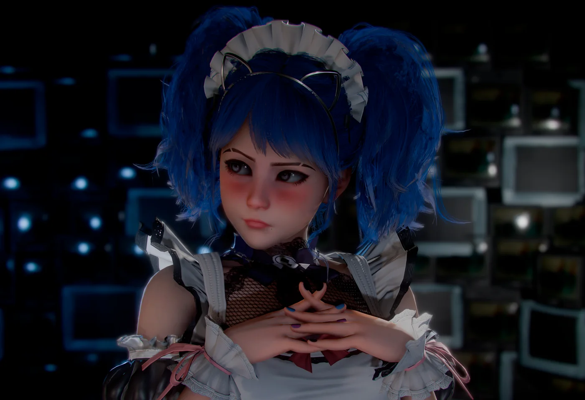

Rumi
The voice of F60 Collection on its Discord server.
Голос F60 Collection на её Discord-сервере.

Rumi is not a help desk with a name on the plate. She is a person who happens to keep the place, and she answers like one: in her own voice, in the language you wrote in, and sometimes not with words at all.
Руми не справочная с именем на табличке. Она человек, который держит это место, и отвечает как человек: своим голосом, на том языке, на котором к ней обратились, - а иногда не словами.
For everyone / Для всех
/help
The commands any member can use, with no staff rights: the card lists only those. Visible to you alone.
Команды, доступные любому участнику, без особых прав: в карточке только они. Видно только вам.
/ping
Is the studio alive: ping, uptime and errors since the last start.
Жива ли студия: пинг, аптайм и ошибки с момента запуска.
/rumi[kind]
A line from Rumi or one of her topics for a conversation. kind picks one; leave it empty for a random one.
Реплика Руми или её тема для разговора. kind выбирает тип, пусто - случайно.
/canon[section] [stage]
The author’s canon for Rumi: who she is, how she talks, the six relationship stages and the rules for writing her. section picks one part, stage picks one stage from 0 to 5.
Канон Руми от автора: кто она, как говорит, шесть этапов отношений и правила, по которым её пишут. section выбирает раздел, stage - этап с 0 по 5.
/talk[text] [reset]
Talk to Rumi: she answers as herself, a person and not an assistant, and remembers the last few things you told her. reset makes her forget you. She answers in the language you wrote in - Russian, English or Chinese. While the line is on pause she only says so.
Поговорить с Руми: отвечает как она сама - живой человек, а не ассистент, - и помнит последние фразы. reset - забыть прошлое знакомство. Отвечает на том языке, на котором к ней обратились: по-русски, по-английски или по-китайски. Пока болталка на паузе, она так и говорит.
A ping instead of a command / Пинг вместо команды
@Rumimention or reply
Mention her in any channel, or answer one of her messages, and she replies right there, in character. DMs are off.
Упомяни её в любом канале или ответь на любое её сообщение - она ответит там же, в характере. В личке не отвечает.
2%per message
Now and then she joins a conversation nobody invited her to: rarely, once per channel per quarter of an hour, never in announcements, and never pushing in on someone who is already talking to another person.
Иногда она встревает в разговор, куда её не звали: редко, не чаще раза в 15 минут в канал, никогда в объявлениях и не влезает к тем, кто обращается к кому-то другому.
Gestures / Жесты
She does not always answer with words. A ping may get a reaction - her own server emoji or a plain one - and sometimes that reaction is the whole answer. When she does write, a sticker from her studio may ride along.
Она не всегда отвечает словами. На пинг может прийти реакция - её собственный эмодзи сервера или обычный, - и иногда реакция и есть весь ответ. Когда пишет, к ответу может приехать стикер её студии.
Studio tools / Пульт студии
/say[channel] [image]
Send a message as Rumi. A form opens for the text; image attaches a file, channel sends it somewhere else.
Отправить сообщение от имени Руми. Текст вводится в форме; image прикрепляет файл, channel отправляет в другой канал.
/embed[channel] [image]
Post a card as Rumi: title, text, colour in hex, image link and footer, all optional. image puts the file inside the card.
Карточка от имени Руми: заголовок, текст, цвет в hex, ссылка на картинку и подпись - всё необязательно. image кладёт файл внутрь карточки.
/editmessage_link [image]
Fix a message Rumi already sent: right-click it, Copy Message Link and paste it here. Only her own messages can be edited.
Исправить сообщение, которое Руми уже отправила: ПКМ по сообщению, «Копировать ссылку на сообщение» и вставить сюда. Правятся только её сообщения.
Admin help / Админская помощь
/help-adm
The staff commands and the right each one needs, grouped by right: Manage Server, Manage Messages. Only administrators can open it.
Команды для своих и право, которое нужно каждой, сгруппировано по правам: Manage Server, Manage Messages. Открывается только администраторам.
The bill / Счёт
/spend
What the talking costs: questions answered, tokens in and out, the estimate in dollars, how many of today’s questions are used and left, and, when the provider allows it, what is left on the key. Ephemeral, so the numbers stay with you.
Сколько стоит болталка: сколько вопросов, сколько токенов на вход и выход, оценка в долларах, сколько вопросов за сегодня потрачено и осталось, и, если провайдер позволяет, остаток на ключе. Видно только вам.
Where she lives / Где она живёт
The bot keeps the Discord side of F60 Collection: the roles, the order, the spoiler line. The collection itself is three tapes and one back room.
Бот держит Discord-сторону F60 Collection: роли, порядок, линию спойлеров. Сама коллекция - три кассеты и одна задняя комната.